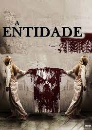
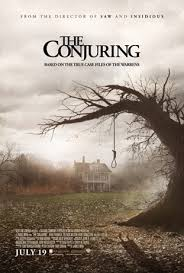
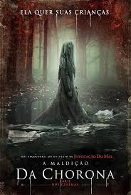
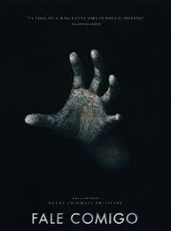
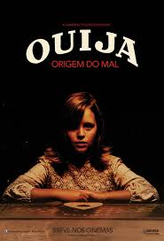

Josh e Renai se mudam com a família para uma casa maior. Lá, o filho Dalton sofre um estranho acidente e entra em coma. Enquanto eles tentam salvar o menino, entidades malignas atormentam a família.

Um autor de romances criminais encontra uma caixa com filmagens antigas de crimes horripilantes, que parecem ter sido cometidos por um assassino em série. Ao investigar, ele e sua família se tornam alvos de uma entidade sobrenatural maligna.
Os investigadores paranormais Ed e Lorraine Warren trabalham para ajudar a família aterrorizada por uma entidade demoníaca em sua fazenda.
Em Los Angeles, na década de 1970, uma assistente social cria seus dois filhos sozinha depois de ser deixada viúva. Ela começa a ver semelhanças entre um caso que está investigando e a entidade sobrenatural chamada de Chorona. A lenda conta que, em vida, Chorona afogou seus filhos após um ataque de ciúmes e depois se jogou no rio, se debulhando em lágrimas. Agora ela chora eternamente, indo atrás e capturando outras crianças para substituir seus filhos.
Um grupo de amigos descobre uma mão embalsamada que lhes permite conjurar espíritos. Viciado na emoção, um deles vai longe demais e abre a porta para o mundo espiritual.
Doris é uma menina solitária e sua mãe finge se comunicar com espíritos. Certo dia, a garota usa um tabuleiro de Ouija para contato com o falecido pai e uma série de seres malignos se apoderam de seu corpo.
